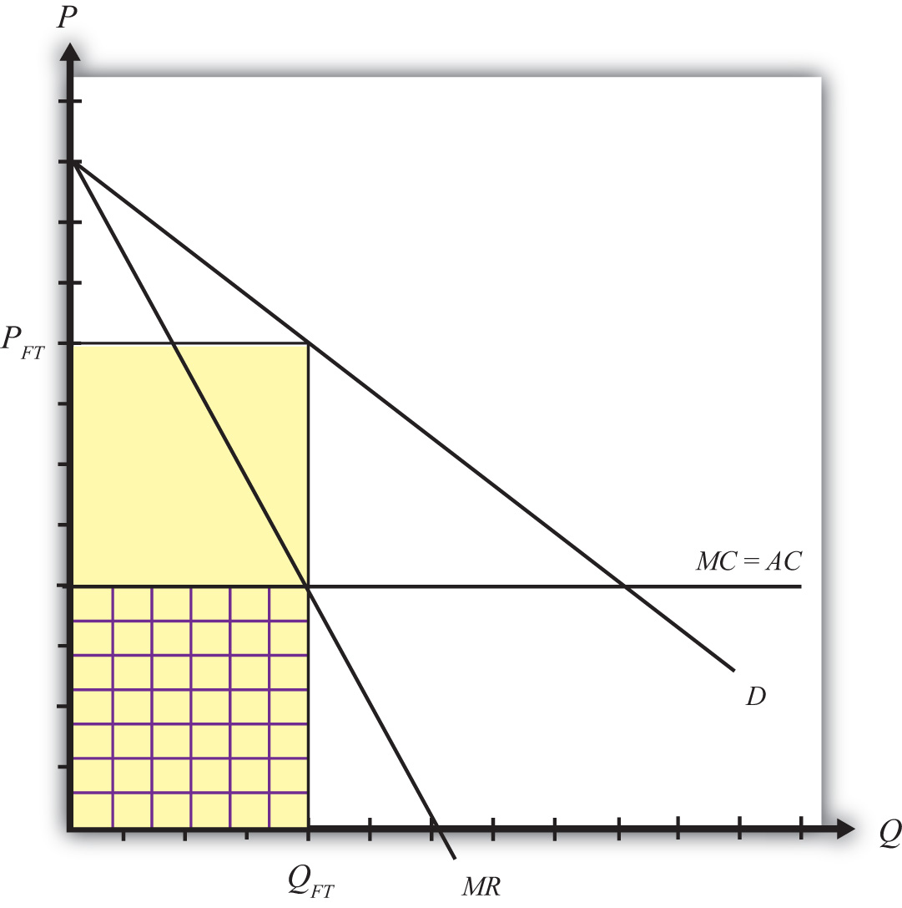
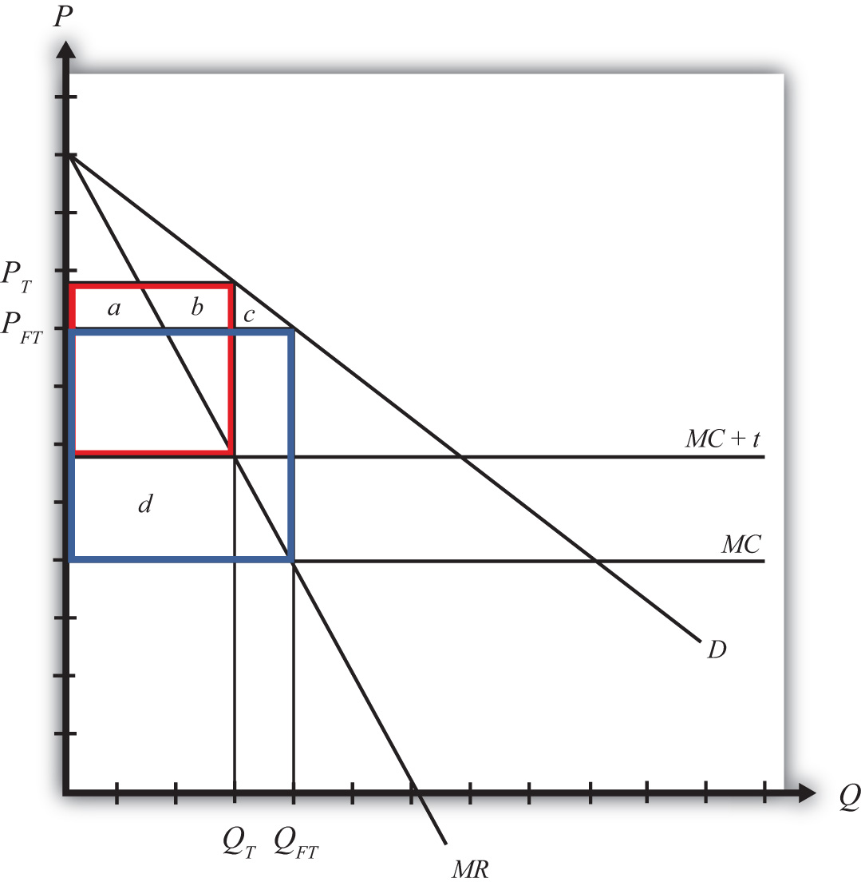
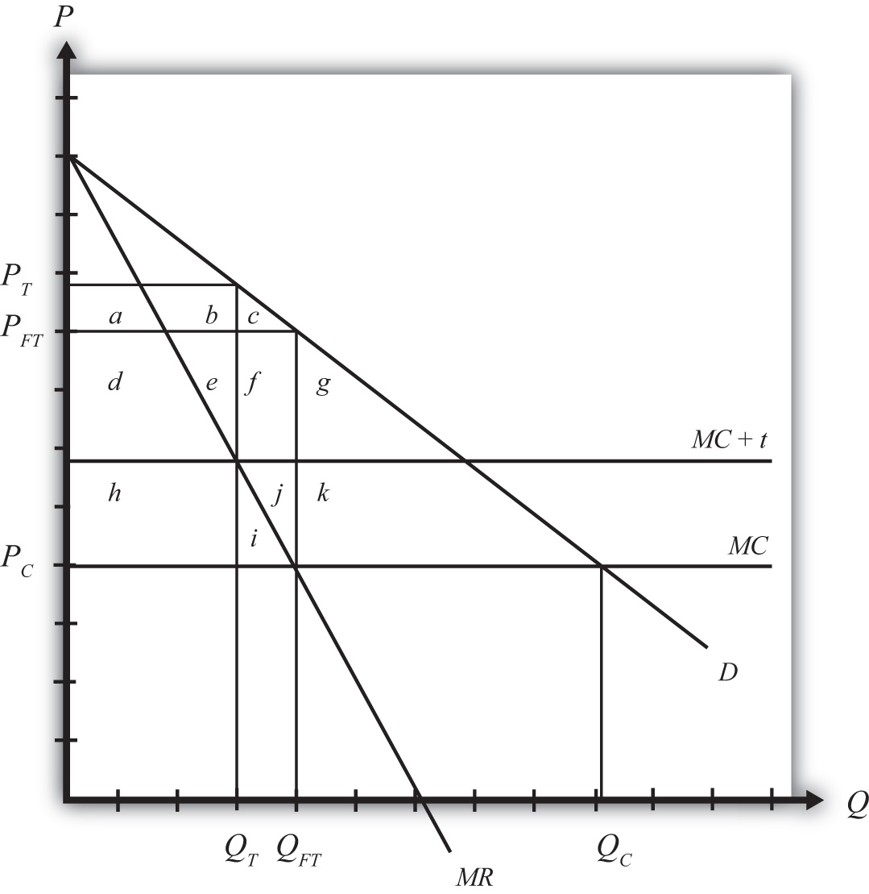

Consider a domestic market supplied by a foreign monopoly firm. The domestic market consists of many consumers who demand the product but has no domestic producers of the product. All supply of the product comes from a single foreign firm.
Although this situation is not very realistic, it is instructive as an application of the theory of the second best. In this case, the market imperfection is that there are not a multitude of firms supplying the market. Rather, we have assumed the extreme opposite case of a monopoly supplier. To make this an international trade story, we simply assume the monopoly happens to be a foreign firm.
Consider the market described in Figure 9.4 "Imports from a Foreign Monopoly Firm". Domestic consumer demand is represented by a linear demand curve, D. When demand is linear, it follows that the marginal revenue curve will have twice the slope and will equal demand when the quantity is zero. Let the flat MC line represent a constant marginal cost in production for the foreign monopolist.
Figure 9.4 Imports from a Foreign Monopoly Firm
Assuming the monopolist maximizes profit, the profit-maximizing output level is found by setting marginal cost equal to marginal revenue. Why? Profit-maximizing output occurs at the quantity level QFT. At that quantity, the monopolist would set the price at PFT, the only price that equalizes demand with its supply.
The monopolist’s profit is the difference between total revenue and total cost. Total revenue is given by the product (PFTQFT), the yellow area in the graph. Total cost is equal to average cost (AC) multiplied by output (QFT), given by the checkered area. The monopolist’s profit is represented by the uncheckered yellow rectangular area in Figure 9.4 "Imports from a Foreign Monopoly Firm".
Generally, strategic trade policy refers to cases of advantageous protection when there are imperfectly competitive markets. The case of a foreign monopolist represents one such case.
More specifically, though, the presence of imperfect competition implies that firms can make positive economic profit. Strategic trade policies typically involve the shifting of profits from foreign firms to domestic firms. In this way, national welfare can be improved, although it is often at the expense of foreign countries.
In this example, we shall consider the welfare effects of a specific tariff set equal to t. The tariff will raise the cost of supplying the product to the domestic market by exactly the amount of the tariff. We can represent this in Figure 9.5 "A Tariff on Imports from a Foreign Monopoly Firm" by shifting the marginal cost curve upward by the amount of the tariff to MC + t. The monopolist will reduce its profit-maximizing output to QT and raise its price to PT. Note that the price rises by less than the amount of the tariff.
Figure 9.5 A Tariff on Imports from a Foreign Monopoly Firm
Table 9.9 "Welfare Effects of a Tariff" provides a summary of the direction and magnitude of the welfare effects to producers, consumers, and the government in the importing country as a result of the import tariff. The aggregate national welfare effects are also shown.
Table 9.9 Welfare Effects of a Tariff
| Importing Country | |
|---|---|
| Consumer Surplus | − (a + b + c) |
| Producer Surplus | 0 |
| Govt. Revenue | + d |
| National Welfare | d − (a + b + c) |
Import tariff effects on the importing country’s consumers. Consumers of the product in the importing country suffer a reduction in surplus because of the higher price that prevails. Refer to Table 9.9 "Welfare Effects of a Tariff" and Figure 9.5 "A Tariff on Imports from a Foreign Monopoly Firm" to see how the magnitude of the change in producer surplus is represented.
Import tariff effects on the importing country’s producers. It is assumed that there are no domestic producers of the goods; thus there are no producer effects from the tariff.
Import tariff effects on the importing country’s government. The government receives tariff revenue given by the per-unit tax (t) multiplied by the quantity of imports (QT). Who gains from the tariff revenue depends on how the government spends the money. Presumably these revenues help support the provision of public goods or help sustain transfer payments. In either case, someone in the economy ultimately benefits from the revenue. Refer to Table 9.9 "Welfare Effects of a Tariff" and Figure 9.5 "A Tariff on Imports from a Foreign Monopoly Firm" to see how the magnitude of the subsidy payments is represented.
The aggregate welfare effect for the importing country is found by summing the gains and losses to consumers, producers, and the government. The net effect consists of two components: a positive effect on the recipients of the government tariff revenue (d) and a negative effect on consumers (a + b + c), who lose welfare due to higher prices.
If demand is linear, it is straightforward to show that the gains to the country will always exceed the losses for some positive nonprohibitive tariff. In other words, there will exist a positive optimal tariff. Thus a tariff can raise national welfare when the market is supplied by a foreign monopolist.
One reason for this positive effect is that the tariff essentially shifts profits away from the foreign monopolist to the domestic government. Note that the original profit level is given by the large blue rectangle shown in Figure 9.5 "A Tariff on Imports from a Foreign Monopoly Firm". When the tariff is implemented, the monopolist’s profit falls to a level given by the red rectangle. Thus, in this case, the tariff raises aggregate domestic welfare as it reduces the foreign firm’s profit.
Although a tariff can raise national welfare in this case, it is not the first-best policy to correct the market imperfection. A first-best policy must attack the imperfection more directly. In this case, the imperfection is the monopolistic supply of the product to the market. A monopoly maximizes profit by choosing an output level such that marginal revenue is equal to marginal cost. This rule deviates from what a perfectly competitive firm would do—that is, set price equal to marginal cost. When a firm is one among many, it must take the price as given. It cannot influence the price by changing its output level. In this case, the price is its marginal revenue. However, for a monopolist, which can influence the market price, price exceeds marginal revenue. Thus when the monopolist maximizes profit, it sets a price greater than marginal cost. This deviation—that is, P > MC—is at the core of the market imperfection.
The standard way of correcting this type of imperfection in a domestic context is to regulate the industry. For example, electric utilities are regulated monopolies in the United States. Power can generally be purchased from only one company in any geographical area. To assure that these firms do not set exorbitant prices, the government issues a set of pricing rules that the firms must follow. The purpose is to force the firms to set prices closer, if not equal to, the marginal cost of production.
Now, in the case of utilities, determining the marginal cost of production is a rather difficult exercise, so the pricing rules to optimally regulate the industry are relatively complicated. In the case of a foreign monopolist with a constant marginal cost supplying a domestic market, however, the optimal policy is simple. The domestic government could merely set a price ceiling equal to the firm’s marginal cost in production.
To see why a price ceiling is superior to a tariff, consider Figure 9.6 "A Price Ceiling on Imports from a Foreign Monopoly Firm". A second-best policy is the tariff. It would raise national welfare by the area (h − a − b − c), which as mentioned will be positive for some tariffs and for a linear demand curve. The first-best policy is a price ceiling set equal to the marginal cost at PC. The price ceiling would force the monopolist to set the price equal to the marginal cost and induce an increase in supply to QC. Consumers would experience an increase in consumer surplus, given by the area (d + e + f + g + h + i + j + k), because of the decline in price. Clearly, in this example, the consumer surplus gain with the price ceiling exceeds the national welfare gain from a tariff.
Figure 9.6 A Price Ceiling on Imports from a Foreign Monopoly Firm
This shows that although a tariff can improve national welfare, it is not the best policy to correct this market imperfection. Instead, a purely domestic policy—a price ceiling in this case—is superior.
Jeopardy Questions. As in the popular television game show, you are given an answer to a question and you must respond with the question. For example, if the answer is “a tax on imports,” then the correct question is “What is a tariff?”
Suppose the U.S. market demand for VCRs is given by D = 1,000 – 2P. The U.S. market is supplied by a foreign monopolist with a constant marginal cost of production equal to $200. The marginal revenue curve faced by the supplier is given by MR = 500 – Q.
Calculate consumer surplus in this market equilibrium.
Suppose the government imposes a specific tariff of $100.